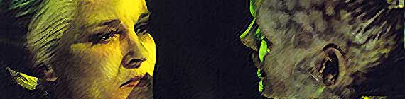

|

| esde sua criao, em 1999, o Trek Brasilis tem buscado trazer ao f brasileiro, em primeira mo, a palavra de quem foi e responsvel pelo fenmeno Jornada nas Estrelas, no Brasil e no mundo. Diversos artistas, atores, escritores e produtores j tiveram a chance de transmitir seu recado aos fs do Brasil. Confira quem j esteve conversando com o TB e contando um pouco mais sobre como a vida nos bastidores. |


30
de maio de 2005 22
de maio de 2005 2
de fevereiro de 2004 11 de novembro
de 2002 14 de
setembro de 2002 17 de junho de 2002 14
de janeiro de 2002 14
de setembro de 2001 23
de julho de 2001 7 de maio de 2001 19
de maro de 2001 29 de janeiro de 2001 1 de janeiro de 2001 4
de dezembro de 2000 18
de setembro de 2000 12
de junho de 2000 29
de maio de 2000 |